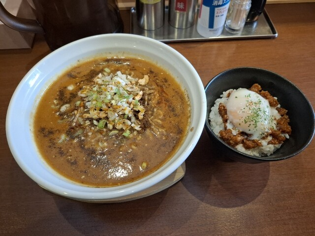
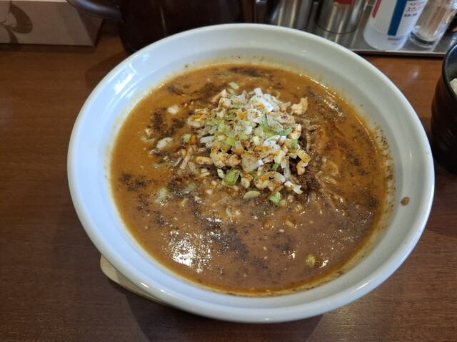
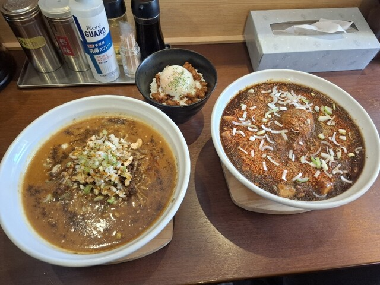

Photo Gallery
担々専家 豪壱（ごういち）とは
釧路で「ラーメンといえば豪壱」と言われるほど地元に根付いた名店。濃厚な海老白湯スープ（えびしろたん）と担々麺の2本柱。2025年1月にも「釧路No.1ラーメン」として愛好家が再訪するほど変わらない味を守り続ける。
実食レビュー
釧路芦野エリアの人気ラーメン店。「[No.1 Ramen in Kushiro]」とGoogle口コミで称される通り、地元ラーメン愛好家から絶大な支持を受ける。濃厚な海老白湯スープは甲殻類の旨みが凝縮されており、辛味噌・塩などスープのバリエーションも豊富。
定番の「海老白湯ラーメン」のほか、担々麺・つけ麺なども充実。駐車場は6〜8台と限られており、開店前から行列ができることも。バーゲンセットのミニ丼（50円〜）との組み合わせが常連客の定番注文スタイル。
おすすめメニュー
- 海老白湯ラーメン（辛味噌） ¥950 — 濃厚な海老の旨みに辛味噌が溶け込む看板メニュー
- 担々麺 ¥950 — 胡麻の芳醇な香りとピリ辛スープが絶妙
- 鶏白湯ラーメン（塩） ¥950 — コクのあるポタージュ状の塩スープ
- バーゲンセット（ミニ丼付き） ＋¥150 — 白ご飯orワンタン等を追加。常連の定番スタイル
📎 最新の営業時間・メニューは公式情報をご確認ください
アクセス・予約
訪問のコツ
- 月・火曜定休。水〜日の午前・午後の2部制で完全入れ替え
- 開店直後に満席になることが多い。10分前から並ぶのがベスト
- 電話がなかなか繋がらないとの声もあり。直接来店がおすすめ